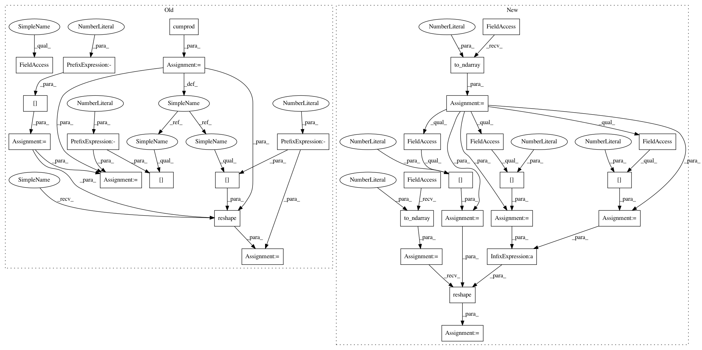

300640c864fedfaba2ff31af360fd975e5db23ee,geomstats/discretized_curves_space.py,L2Metric,log,#L2Metric#Any#Any#,111
Before Change
Riemannian logarithm of a point wrt a base point.
assert point.shape == base_point.shape
point_shape = point.shape
n_coord = point_shape[-1]
shape_cumprod = np.cumprod(point_shape)
point = point.reshape(shape_cumprod[-2], n_coord)
base_point = base_point.reshape(shape_cumprod[-2], n_coord)
log = self.embedding_metric.log(point, base_point)
log = log.reshape(point_shape)
return log
After Change
Riemannian logarithm of a curve wrt a base curve.
assert curve.shape == base_curve.shape
curve = gs.to_ndarray(curve, to_ndim=3)
base_curve = gs.to_ndarray(base_curve, to_ndim=3)
n_curves = curve.shape[0]
n_sampling_points = curve.shape[1]
n_coords = curve.shape[2]
curve = curve.reshape(n_curves * n_sampling_points, n_coords)
base_curve = base_curve.reshape(n_curves * n_sampling_points, n_coords)
log = self.embedding_metric.log(curve, base_curve)
log = log.reshape(n_curves, n_sampling_points, n_coords)
log = log.squeeze()
In pattern: SUPERPATTERN
Frequency: 3
Non-data size: 31
Instances
Project Name: geomstats/geomstats
Commit Name: 300640c864fedfaba2ff31af360fd975e5db23ee
Time: 2018-11-12
Author: alice.le-brigant@enac.fr
File Name: geomstats/discretized_curves_space.py
Class Name: L2Metric
Method Name: log
Project Name: geomstats/geomstats
Commit Name: 300640c864fedfaba2ff31af360fd975e5db23ee
Time: 2018-11-12
Author: alice.le-brigant@enac.fr
File Name: geomstats/discretized_curves_space.py
Class Name: L2Metric
Method Name: log
Project Name: geomstats/geomstats
Commit Name: 300640c864fedfaba2ff31af360fd975e5db23ee
Time: 2018-11-12
Author: alice.le-brigant@enac.fr
File Name: geomstats/discretized_curves_space.py
Class Name: L2Metric
Method Name: dist
Project Name: geomstats/geomstats
Commit Name: 300640c864fedfaba2ff31af360fd975e5db23ee
Time: 2018-11-12
Author: alice.le-brigant@enac.fr
File Name: geomstats/discretized_curves_space.py
Class Name: L2Metric
Method Name: exp